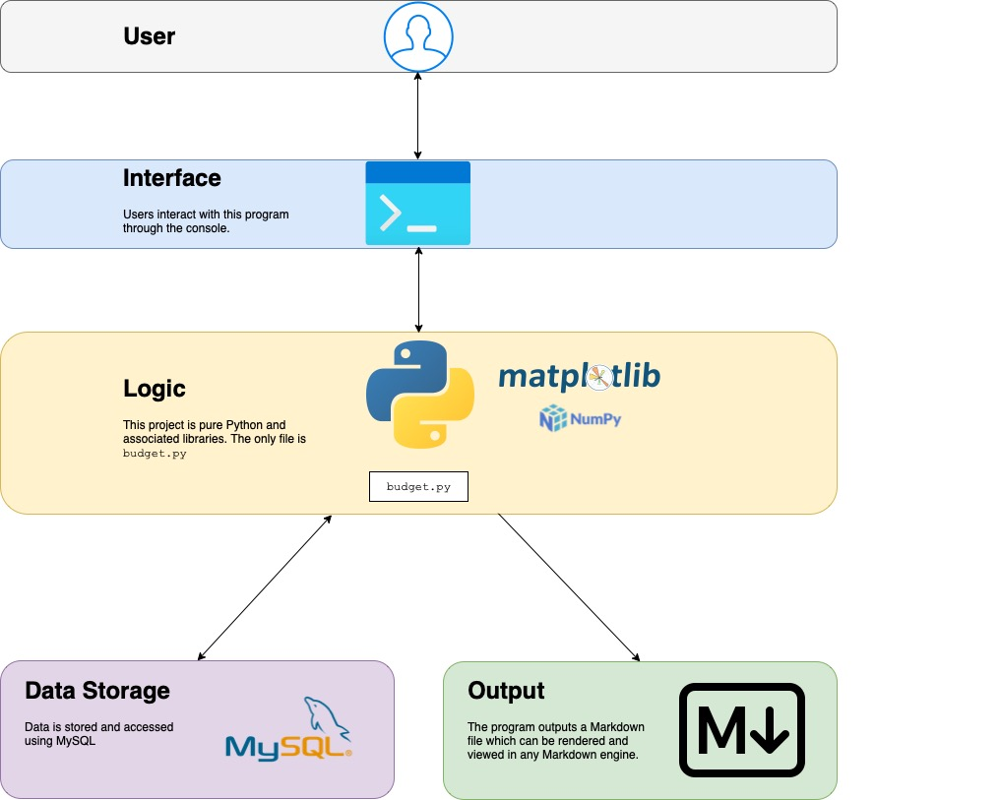
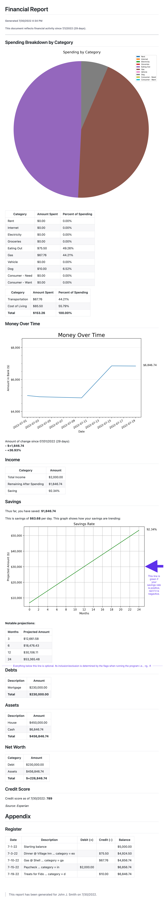
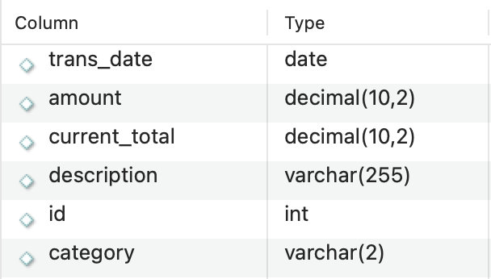

This program is designed to track, analyze, and visualize financial habits using Python and libraries.
This project started as a way for me to not have to manually update categorical amounts every time I added to my register, hence the use of openpyxl and Excel serving as the “database”.
While writing a script to add my expenses and let Python take care of the rest, I realized the opportunity for some data analysis and visualization. I decided to turn this analysis in a report. This automatically-generated report would be a nice way to show me my financial habits quickly and in a digestible manner.
The following image represents the current state of the project’s architecture.

The following shows the user’s interaction with the program. The parts that are marked as code are
part of the program. Regular text is user input.
bash-3.2$ python3 budget.py -fl
Most recent entry: 7-10-22 Gas @ Shell ... category = ga $67.76
Would you like to add an entry? y/n
y
Entry category:
(r) rent
(i) internet
(e) electricity
(g) groceries
(eo) eating out
(ga) gas
(v) vehicle
(d) dog
(cn) consumer - need
(cw) consumer - want
(in) income
in
Entry amount: $2000
Year: 2022
Month: 7
Day: 15
Description: Paycheck
Would you like to add an entry? y/n
y
Entry category:
(r) rent
(i) internet
(e) electricity
(g) groceries
(eo) eating out
(ga) gas
(v) vehicle
(d) dog
(cn) consumer - need
(cw) consumer - want
(in) income
d
Entry amount: $10
Year: 2022
Month: 7
Day: 19
Description: Treats for Fido
Would you like to add an entry? y/n
n
Time spent entering data: 0:00:49.118304
Time spent generating plots: 0:00:00.840138
Do you have debts to add? y/n
y
Description: Mortgage
Amount: $230000
Do you have debts to add? y/n
n
Do you have assets to add? y/n
y
Description: House
Amount: $450000
Do you have assets to add? y/n
n
What is your credit score? 789
What is your source? Experian
What name would you like to appear on the report? John J. Smith
Time spent entering additional data: 0:01:01.620029
Time spent generating report: 0:00:00.000552
Total time spent: 0:01:50.784277
This input, along with a couple of other pieces of existing data in the Excel sheet, produce the following report. Note that the report is generated as Markdown. This image shows the Markdown after it has been rendered.

The program will prompt user for expenses/incomes to add to the register, and add the data respectivly to the spreadsheet. The spreadsheet serves this system primarily as a database. A report, including plots, is generated at the end of running and can be found in the directory from which the program was run.
Note: the report is written over each time the program is run. To save specific reports, you must do so manually.
--displayThis argument opens the markdown file that is generated at the end of running. Note that this is by default done through QLMarkdown and the codebase should be updated to your favorite application to view Markdown.
--creditA simple prompt that requires you to put in your credit score and the source from which you got it. Note that this is self-reporting - the program does not integrate with any credit services.
--officialAdds a line indicating whom this report was run for, which the user is prompted to input, to add a layer of officialness to the document in case it is being presented to to, for example, a bank.
--networthPrompts user similarly to the core functionality to get all debts and assets, lists debts and assets in the report, and also calculates net worth, taking your current bank balance into consideration.
--registerShows a full register of your expenses.
--fullAll of the above functionality is executed.
--no-regCreates a full report without a register included.
Assuming all libraries are installed, which may require installation through pip, to start, do
the following:
Clone the repository
Create a SQL database/table like follows:

Update budget.py
a. There are SQL-specific variables that will need to be tailored to you. They are all named starting with
either SQL_ or DB_.
b. If you change your categories, these will need to be updated.
c. Update the line os.system("open report.md -a QLMarkdown") in the second if in the
try-except statement at the end of the file.
Run the program! To run the program, in your terminal, run python3 budget.py -args, where
-args is any (or none) of the following:
--display, -d
--credit, -cr
--official, -of
--networth, -nw
--full, -fl
The following libraries are the primary libraries I used to create this project. For a full list of depencies,
please look at the imports at the top of budget.py
Matplotlib
NumPy
MySQL
SnakeMD
Going forward, I have a couple of main changes that I would like to take this project:
I did my financial tracking in Excel, including creating visualizations of my habits, and originally just
started with this project to automate the updating of each categorical amount, which proved to be annoying to do
manually. I would like to create a SQL database for the long-term use of this project.
Completed in August 2022.
I would like to add additional functionality to this program to track investments and savings in a more focused fashion. This might be a standalone project that I addd to this project.